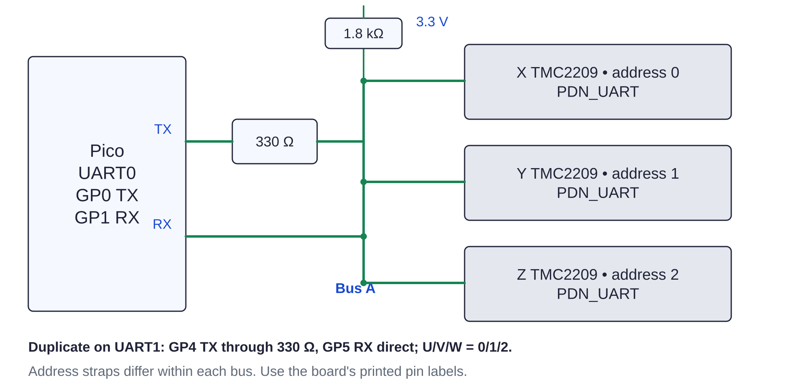

Controller / bench motion136 / 179
Verify all six channels and UART
Repeat the signed motor test on Y, Z, U, V and W. Then verify a six-channel request and the diagnostic response to a missing UART bus.

- Run the same +0.0400 / −0.0400 pair on each remaining motor; record connector, sign and completion counts.
- Issue the six-axis request below. Observe each requested sign and no unsolicited channel.
- Disarm; unplug 24 V and disconnect one UART bus. Restore power and issue
clear; it must refuse a healthy ready state. - Unplug 24 V, restore the bus, stop the session and remove the temporary electrical reference.
move6 0.0025 -0.0025 0.0025 0.0025 -0.0025 0.0025 500 status disarm
Ready when
All six channels match the harness labels; a missing bus prevents readiness and restore alone produces no motion. Wrong direction is corrected with all power removed by reversing one identified winding pair or a governed DIR inversion. Record the choice and repeat the affected channel.